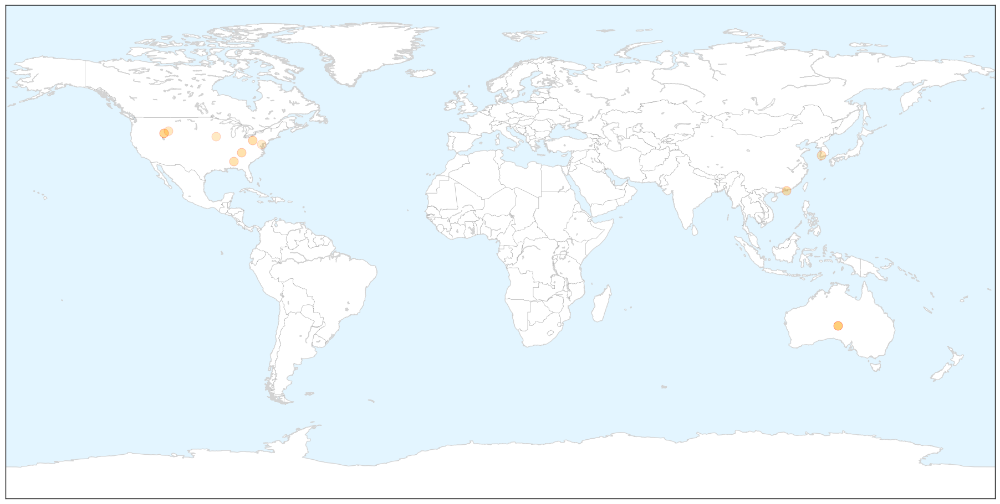

Influenza
30-Day Web Trend
4 alerts, 3 warnings

30-Day Twitter Trend
1 alerts, 0 warnings

Article Locations

X

Article Confidences

Top Articles:
- 0.987
- The flu vaccine is available in the Lehigh Valley
- 0.967
- Editorial: Free Flu Shot Saturday helps on two fronts
- 0.951
- Flu vaccines to be distributed for free to high-risk groups
- 0.943
- The US Could Be Heading For One Of Its Worst Flu Seasons In Years
- 0.924
- Alabama mystery illness solved -
- 0.889
- The US could be heading for one of its worst flu seasons in years
- 0.798
- Gov't on high alert over bird flu spread during Chuseok
- 0.751
- September 25, 2015 Archives
- 0.751
- September 25, 2015 Archives
- 0.751
- September 25, 2015 Archives
- 0.690
- Video: Tough lessons rise from avian influenza outbreak
- 0.601
- State Agriculture Leaders Urge Poultry Growers to Be on Guard for Deadly Bird Flu
Top Tweets:
-
No tweets found for Sep 25, 2015
West Nile Virus
30-Day Web Trend
0 alerts, 0 warnings

30-Day Twitter Trend
0 alerts, 0 warnings

Article Locations


Article Confidences

Top Articles:
- 0.989
- WFMJ.com News weather sports for Youngstown-Warren Ohio
- 0.989
- Oakland County woman who died of West Nile Virus identified
- 0.903
- Five Human Cases Of West Nile Reported In Connecticut
- 0.873
- West Nile Virus kills Oakland County woman
- 0.855
- Michigan has first West Nile virus death
- 0.803
- Oakland County Woman Dies Of West Nile Virus « CBS Detroit
- 0.757
- Fewer mosquitoes in Maine, New Hampshire
- 0.727
- 5 Human Cases of West Nile Virus Reported in Connecticut
Top Tweets:
-
No tweets found for Sep 25, 2015